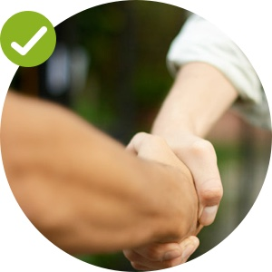

¿Cómo uso la App?
Nuestra primera versión es bastante fácil de usar
Hay 3 columnas principales: Envios Disponibles, Envios Activos e Historial
A continuación te mostramos un recorrido básico por la aplicación:
Tab 1: Envios disponibles
Tab 1: Envios disponibles
-
Lista de Envios
En esta pantalla puedes ver una lista de envios que se encuentran disponibles con informacion basica de la comuna de retiro y entrega.
Si deslizas hacia la izquierda puedes ver de cuantos Km es el recorrido, cuanto dinero paga y cuando lo pagan, sin comprometerte a hacerlo.
-

Ruta de Envio
Al hacer click sobre un envío la App te muestra la ruta en forma de mapa donde punto "A" es el inicio y el punto "B" es el destino.
Tambien apareces localizado tú con un icono rojo.
Hasta este punto aun no has tomado la carrera, para info aun mas detallada del envio haz click en el boton "Acciones"
-
Detalles de Envio
En esta pantalla puedes ver informacion detallada del envío, como sus dimensiones, peso, nombre del destinatario y direcciones exactas.
En esta pantalla es donde puedes decidir tomar el envío y realizarlo. Para hacer esto debes hacer click en el boton "Comenzar". Recuerda que tienes un tiempo limitado para cancelar la carrera una vez que la has tomado.
Tab 3: Historial de Envios
-

Troubleshooting
Una buena forma de agilizar la entrega es ser amable con la gente con quien te encuentras. Recuerda siempre saludar con una sonrisa, hablar con tranquilidad, tratar a la gente como si fuese un pariente cercano. Muchas problemas se solucionan con la buena voluntad de las personas.
-

Confirmación y pagos
En tu historial puedes ver la informacion completa sobre cada envio realizado y el estado en el que se encuentra, por ejemplo si fue confirmado o no por el destinatario o la situacion de pago.
/